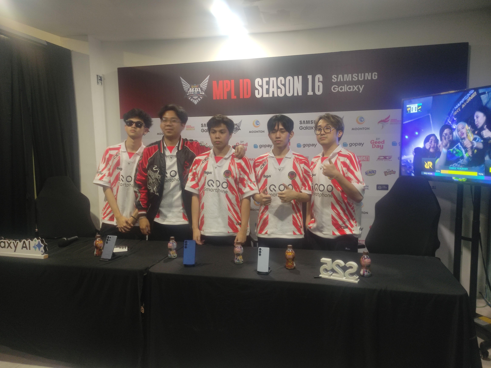
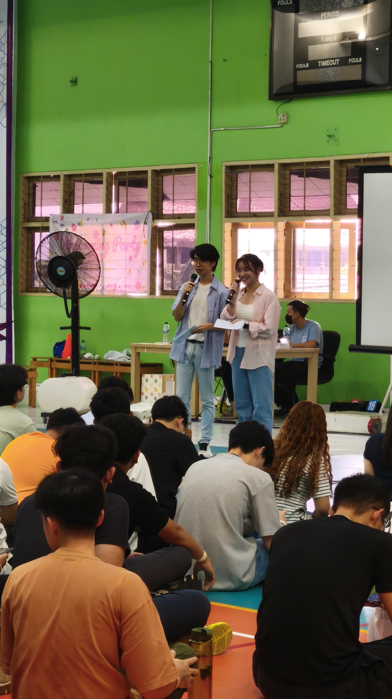
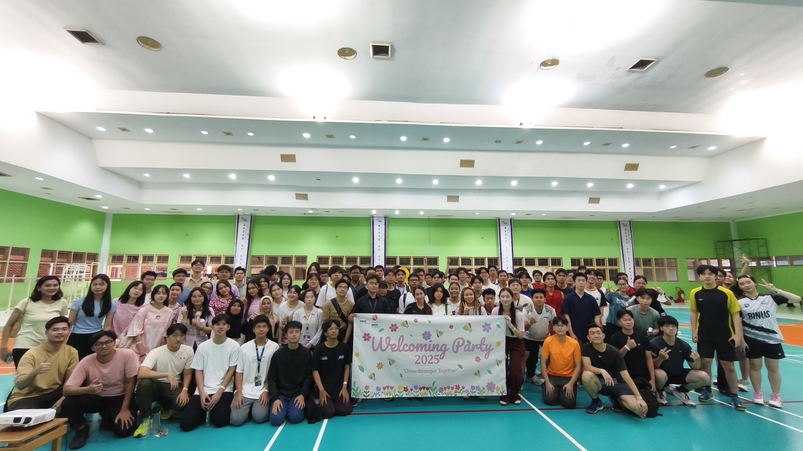
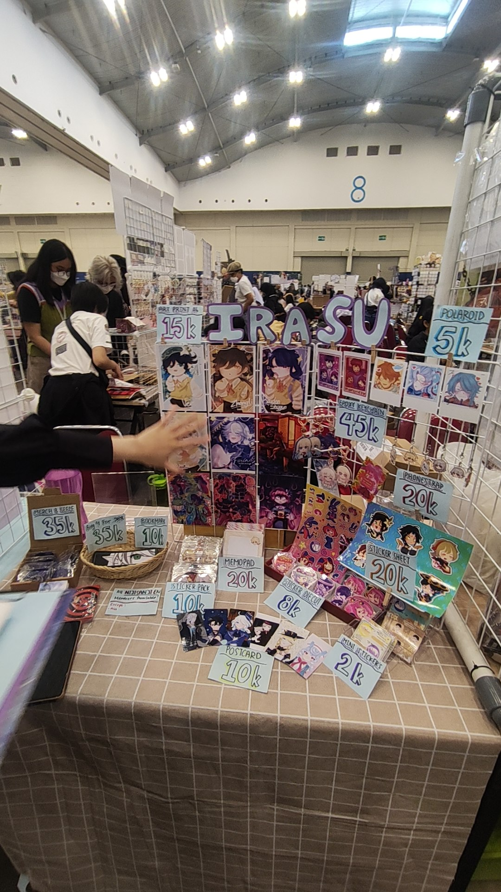

Design Beyond
The Horizon.
Jovan Edric Sumarto — navigating the space between artificial intelligence research, creative UX design, and immersive live events.
3+
Lightyears Exp.
4
Key Missions
26'
ICISS Presenter
The Architect of
Interfaces.
I am an adaptable tech-explorer bridging the gap between deep technical AI capabilities and intuitive, human-centered design. My trajectory spans from mapping neural networks for image classification to directing live audio-reactive visual aesthetics for massive crowds.
UI/UX Design
Crafting intuitive interfaces that bridge human intention with digital systems.
AI Research
Training models to understand visual data. Hybrid feature extraction at ICISS 2026.
Live Visuals & Events
Directing real-time audio-reactive mapping (FFT) in Resolume for large-audience events. MC, logistics, booth management at Comifuro 17 & 18.
Professional
Portfolio.

AI Image Classification Research
Research on dual-stream hybrid feature extraction using MobileNetV2 and EfficientNet-B0, presented at ICISS 2026 at ITB.

MPL Esports Media Coverage
Conducted on-site interviews with professional players and coaches at MPL ID Season 16 for Media Up Stallion.

Live Visual & Motion Design
Designed and operated real-time, FFT audio-reactive visual systems for large-scale events over 2.5 years.

University Welcome Event Host
Hosted a university welcome programme for 90–100 attendees while coordinating delivery with the organising committee.

University Event Logistics Coordination
Coordinated logistics for university conferences, seminars, and welcome events, including venues, vendors, and staffing.

Comifuro 17 & 18
Managed merchandise booth operations and customer engagement at Indonesia's largest pop-culture convention.
The Other
51%.
Stuff that doesn't fit a resume but makes me, me.
SYS.AUDIO
Live Visuals
FFT-reactive in Resolume. Real crowd, real pressure, real-time.
SYS.GAME
Valorant // Ranked
Pattern recognition, split-second calls, comms under pressure.
SYS.IRL
Comifuro Booth
Merch sales, crowd flow, logistics at Indonesia's biggest anime event.
Establish
Connection.
Whether it's a new mission, collaboration, or just a signal across the void — comms are always open.